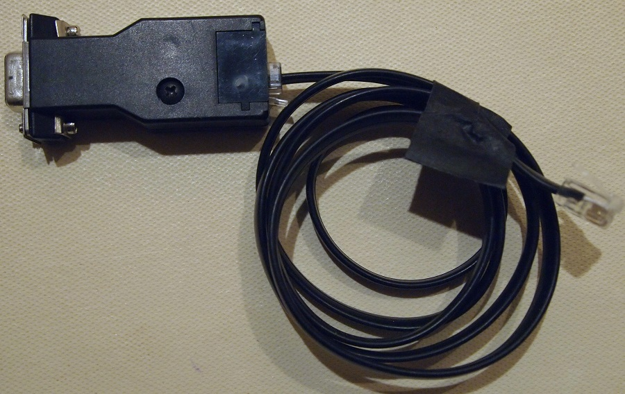
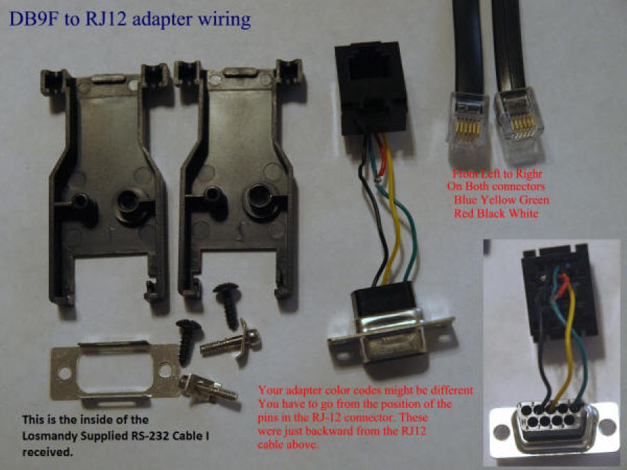
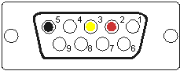

Follow the color coded for Gemini 2 RS232cable wiring
The RS-232 connector is a Female DB-9 connector.
The telephone connector is a RJ-12 connector. The color code is from the DB9F connector to the RJ12 end that goes into the Gemini-2.
|
 Click on image for larger view The Losmandy GCC GEM 2 serial cable. |
|
 Click on image for larger view |
|
The pictures above are from the Losmandy supplied Serial Port
cable GCC GEM 2 with the RS232 end taken apart to show how it was made. You
can purchase it from Losmandy Part number GCC Gem 2 on the
accessory
page or make your own. Losmandy may change the manufacture and
color of the DB9F to RJ12 adapter they use. That is up to them. Notice that the Green wire in the above drawing has the red wire tapped into it. These are the two center pins on the RJ12 connector and they are wired to pin 5 of the RS-232 plug. This is the ground signal from the Gemini-2. Note: the above color codes do not match the ones I used on the Serial Cable Wiring Page to show how to wire from the RS232 jack to the RJ12 Telephone connector. Every manufacture of DB9M to RS232 adapters use different color codes, so there is really no way for me to match colors. Here is a few of other manufactures of DB9F to RJ12 adapters (unwired): |
|

Follow the color coded for Gemini 2 RS232cable wiring The RS-232 connector is a Female DB-9 connector. The telephone connector is a RJ-12 connector. The color code is from the DB9F connector to the RJ12 end that goes into the Gemini-2. |
| Of course you have to wire them correctly, and then add the telephone cable (6 wire) with each end put on correctly to match how the DB9F to RJ12 was wired. Please note that all of these do not follow the same color code. I know for a fact that #1 and #2 are backwards to each other, or at least was when I was making and selling Gemini-1 cables. I suggest that if you are not good at following the logic behind wiring up the DB9F to RJ12 adapter and making a RJ12 to RJ12 cable, then please order one from Losmandy. |